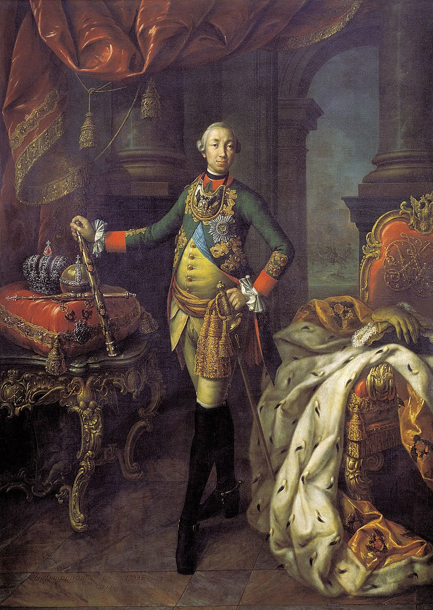

Пётр III Фёдорович — российский император, внук Петра I Великого и супруг будущей императрицы Екатерины II. Он вступил на престол в 1761 году после смерти Елизаветы Петровны и правил Российской империей менее одного года.
Пётр III воспитывался в Германии и с детства был связан с европейской культурой. После прибытия в Россию он был объявлен наследником престола и принял православие. Однако многие представители дворянства и гвардии относились к нему с недоверием.
Во время своего короткого правления Пётр III провёл несколько важных реформ. Одним из главных решений стал Манифест о вольности дворянства, который освобождал дворян от обязательной государственной службы.
Император также пытался изменить систему управления армией и государством, ориентируясь на прусские порядки. Это вызывало недовольство среди части русского общества и военных.
Во внешней политике Пётр III прекратил участие России в Семилетней войне и заключил мир с Пруссией. Такое решение вызвало споры, так как русская армия уже добилась значительных успехов в войне.
Летом 1762 года в результате дворцового переворота Пётр III был свергнут, а власть перешла к его супруге — Екатерине II. Несмотря на короткое правление, некоторые реформы Петра III оказали влияние на дальнейшее развитие Российской империи.
